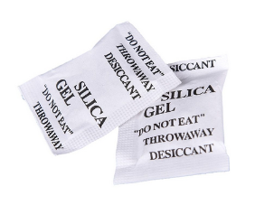

Многие люди пользуются в быту суперклеем достаточно редко - раз в несколько месяцев, когда что-то нужное сломалось, и требуется быстро поченить. И все они сталкиваются с одной и той же проблемой - заботливо оставленный тюбик суперклея просто высох, и надо идти покупать новый.
Некоторые продлевают срок хранения тюбика путем плотного завертывания в полиэтиленовый пакет или в пищевую пленку (если она в доме есть). И это правильная тактика, но не максимально эффективная.
Для того, чтобы понять, как сохранить суперклей, надо понять, что является причиной (агентом) отвердевания. Не многие знают, что суперклей отвердевает не за счет воздуха, не за счет кислорода, содержащегося в воздухе, а за счет влажности, содержащийся в воздухе. Да, определенное количество молекул H2O является тем фактором, который влияет на отвердевание суперклея.
Когда тюбик суперклея помещается в герметичный плиэтиленовый пакет или заворачивается в пленку, очень важно, чтобы количество воздуха, где находится тюбик, было минимальное. Тогда пары цианокрилата быстро насытят это небольшой объем воздуха, и влага провзаимодействует с ними. А сама жидкость суперклея, находящаяся в жидком состоянии, так и останется жидкостью даже под спиралью крышечки где есть некоторый контакт с этим воздухом.
Но можно сделать еще кое-что. Как говорится, если у вас есть коробка из-под обуви, не спешите ее выбрасывать! Вначале вытащите из нее транспортировочные пакетики с шариками из силикогеля.
